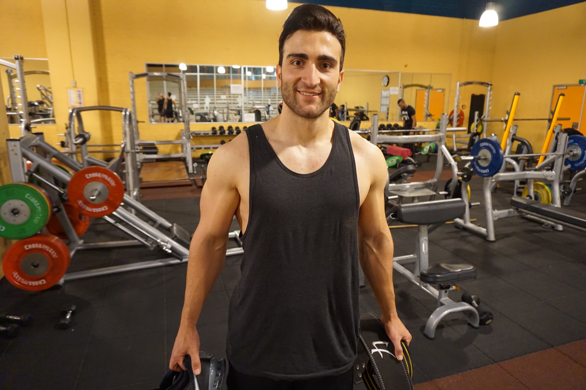

01
Drie keer per week. Meer niet.
Je hoeft niet in de gym te wonen voor maximale resultaten. Je krijgt een trainingsschema op jouw niveau, gericht op techniek en meetbare progressie. "Ik ben het levend bewijs dat 3 dagen trainen beter kan zijn dan 7 dagen trainen", aldus een cliënt.
- Schema op maat voor jouw niveau en agenda
- Focus op techniek, opgebouwd door een docent anatomie
- Elke week zichtbare progressie in je logboek

3×per week, dat is alles